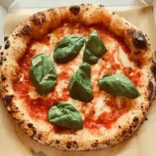
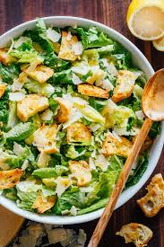

Ingredients
Bread slices, Cheddar Cheese, Mozzarella Cheese, Butter, Salt
Recipe
- Butter one side of each bread slice.
- Place one slice, buttered side down, on a hot pan.
- Layer with cheddar and mozzarella cheese.
- Top with the second slice, buttered side up.
- Grill until golden brown on both sides and cheese is melted.

Pizza Napoletana
Ingredients
Flour, Tomato, Mozzarella di Bufala Campana, Basil, Olive Oil, Oregano, Yeast, Salt
Recipe
- Mix yeast with warm water and let it sit until frothy.
- Combine flour and salt, then add the yeast mixture.
- Knead the dough until smooth, let it rise for a few hours.
- Roll out the dough, spread tomato sauce, sprinkle mozzarella, basil, and drizzle olive oil.
- Bake in a preheated oven at the highest temperature until the crust is golden and cheese is bubbly.

Caesar Salad
Ingredients
Romaine Lettuce, Croutons, Parmesan Cheese, Caesar Dressing (Anchovies, Garlic, Dijon Mustard, Lemon Juice, Olive Oil, Egg Yolk)
Recipe
- Wash and dry lettuce leaves.
- Prepare dressing by blending anchovies, garlic, mustard, lemon juice, and olive oil. Emulsify with egg yolk.
- Layer with cheddar and mozzarella cheese.
- Toss lettuce with dressing and croutons.
- Sprinkle with grated Parmesan cheese and serve immediately.